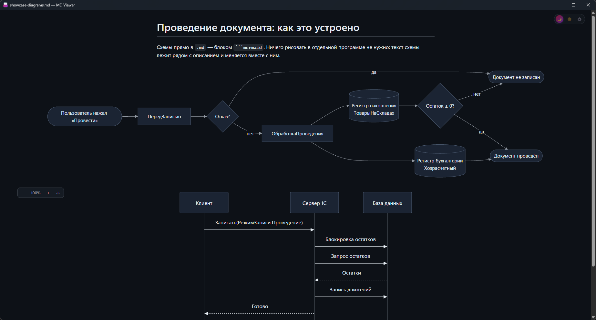

Markdown, в котором код 1С выглядит как в Конфигураторе
MD Viewer — лёгкий просмотрщик .md для Windows. Двойной клик по файлу — и через полсекунды документ открыт: код раскрашен, таблицы и схемы на месте.
Контроль остатков при проведении
&НаСервереПроцедура ОбработкаПроведения(Отказ, РежимПроведения) // Нет товара на складе — документ не проводим Выборка = Запрос.Выполнить().Выбрать(); Пока Выборка.Следующий() Цикл Если Выборка.Остаток < 1 Тогда Сообщить("Нет на складе: " + Выборка.Номенклатура); Отказ = Истина; КонецЕсли; КонецЦикла; КонецПроцедуры
Код 1С в привычных цветах
ТЗ, заметки к доработкам, документация в репозиториях, ответы нейросетей — всё это сейчас в Markdown. В обычных просмотрщиках код 1С там серая простыня. MD Viewer раскрашивает его так, как глаз привык видеть в Конфигураторе.
- Ключевые слова и знаки
Если Тогда Процедура = ; ( - Имена
Выборка Номенклатура Сообщить - Строки, числа и даты
"Нет на складе" 1 '20261126' - Комментарии
// Нет товара — не проводим - Директивы и препроцессор
&НаСервере #Область
Достаточно указать язык у блока кода: ```bsl, ```1c или ```1с. В тёмной теме схема та же, только приглушённая. Ещё около 40 языков подсвечиваются в стиле GitHub: SQL, YAML, JSON, XML, C#, Python, PowerShell, bash.
Открыл, прочитал, закрыл
Без вкладок, проектов и регистрации. Просмотрщик только показывает файл и ничего в нём не меняет.
Окно за 0,3 секундыДокумент появляется раньше, чем вы успеете убрать руку с мыши.
Тяжёлое — только когда нужноПодсветка и схемы подключаются лишь к файлам, где они есть. Простая заметка открывается как текстовый файл.
Сам обновляетсяСохранили файл в редакторе — страница перерисовалась, прокрутка осталась на месте.
Схемы и широкие таблицы — на весь экран
Схемы Mermaid пишутся текстом в блоке ```mermaid и рисуются сразу: блок-схемы, последовательности, Ганта, круговые.
Большая схема или таблица на двадцать колонок раскрывается на всю ширину окна, в натуральную величину. Не помещается — прокрутка, перетаскивание мышью и масштаб над схемой.

И всё, что нужно для чтения
- Оглавление сбоку
- Полоски по заголовкам, текущий раздел подсвечивается. Наведите — раскроется список.
- Три темы
- Тёмная, светлая или как в Windows. Выбор запоминается, заголовок окна перекрашивается вместе со страницей.
- Ссылки между документами
- Другие .md открываются в том же окне, назад — Alt+←. Сайты — в браузере.
- Поиск, масштаб, печать
- Ctrl+F, Ctrl+колесо, Ctrl+P в PDF. Esc закрывает окно.
- Картинки и списки задач
- Картинки по относительным путям, сноски, чекбоксы. Служебный YAML в начале файла скрыт.
- Безопасно
- Скрипты из .md не выполняются, даже если в файле они есть.
Установка за минуту
Права администратора не нужны, .NET ставить не нужно — он уже внутри.
Скачайте архив и распакуйте его в любую папку.
Запустите setup.cmd. Программа установится и станет открывать файлы .md. Обновление — тот же setup.cmd поверх.
Если .md по-прежнему открывает другая программа — правый клик по файлу, «Открыть с помощью», «Выбрать другое приложение», MD Viewer, «Всегда».
Программа не подписана сертификатом, поэтому Windows может показать «Система Windows защитила ваш компьютер». Нажмите «Подробнее» и «Выполнить в любом случае».